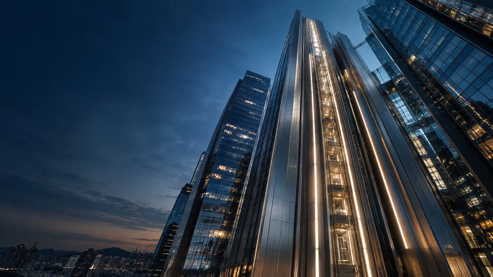

검토용 시안
01건물 전체
건물의 중심으로.
우리의 일상을 움직이는 승강기.
그 안에서 구일을 만나보세요.
공간을 준비하고 있습니다

구일엘리베이터 KV 시안
이 환경에서는 3D 화면을 표시할 수 없습니다.
최신 Chrome 또는 Safari에서 다시 열어주세요.
01건물 전체
우리의 일상을 움직이는 승강기.
그 안에서 구일을 만나보세요.

이 환경에서는 3D 화면을 표시할 수 없습니다.
최신 Chrome 또는 Safari에서 다시 열어주세요.